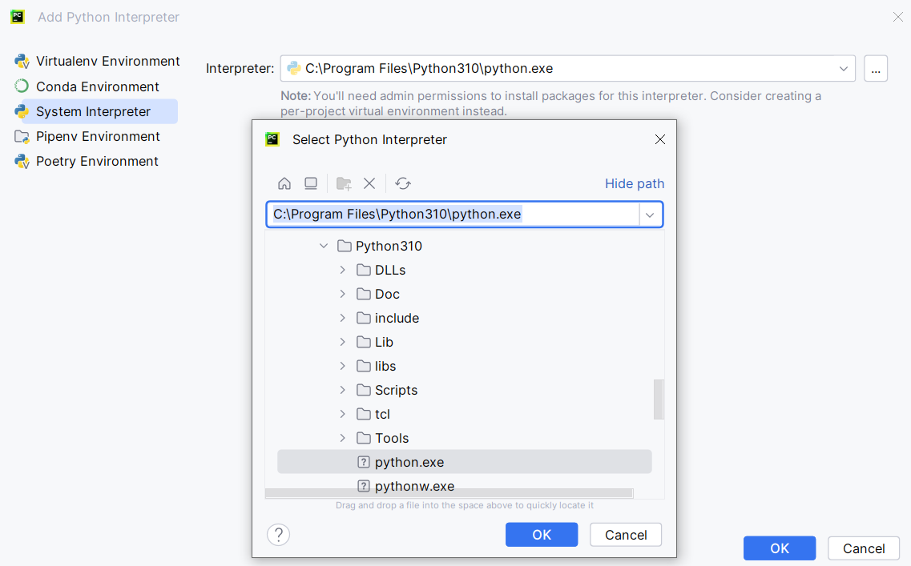
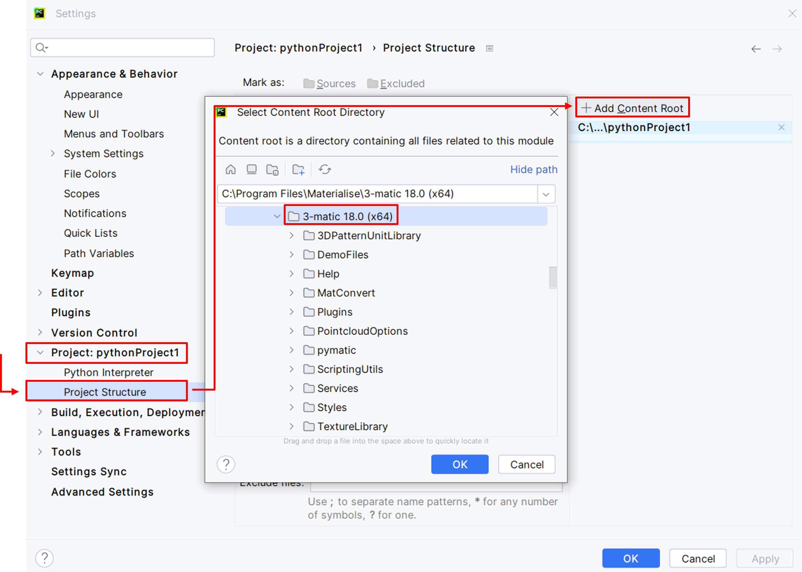

3. JetBrains PyCharm¶
To setup Pycharm to work via an external IDE, please follow the steps below:
- Install the RPyC package. For more information on how to do so, please refer to the following section: Installing extra packages (optional)
- Install the lastest version of PyCharm Community: https://www.jetbrains.com/pycharm/download/#section=windows
- Launch PyCharm and click on New Project. Set up the “Previously configured interpreter” by clicking on “Add local interpreter…”.
{kind=link}
4. Select System Interpreter, then select the path to python.exe in your local Python directory “C:\Program Files\Python310\python.exe”. This location should reflect the Python directory where the RPyC package has been installed. Then, click OK and Create.
{kind=link}
5. Next, click on File -> Settings. On the left side menu, you will find Project:<Your project name>. Expand it and click on Project Structure. Click on the Add Content Root button on the right. Browse to the location where 3-matic is installed and click OK. For example: “C:\Program Files\Materialise\3-matic 18.0 (x64)”. Then click Apply and OK.
{kind=link}
6. Restart or force refresh PyCharm. Then, activate “Toggle Listener” on 3-matic. Ensure that you start your script with “import trimatic” and you can now run and debug your python scripts from PyCharm Community.
Disclaimer: All external IDEs mentioned in this chapter are property of their respective owners.